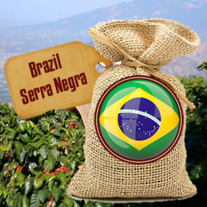

Brazil Serra Negra Coffee

- Brasil Serra Negra coffees come from Mogiana region in the state of Minas Gerais, one of the most important coffee regions.
- It truly captures the essence of Brazil with its low acidity (preferred by Brazilians) and fascinating aroma.
- It is very nutty like warm, gently roasted walnuts.
- There is a well-rounded spice like paprika in the finish.
- Contains heart-healthy potassium
- The body is medium to medium-heavy depending on how you roast it and brew it.